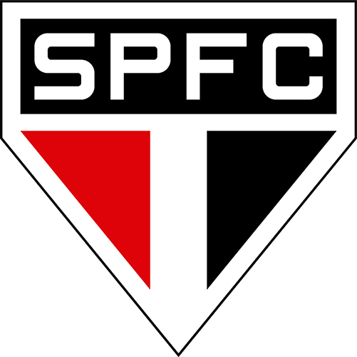
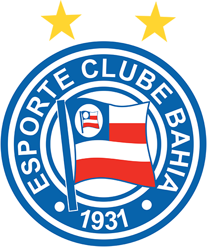

Sobre o X2
O X2 é um torneio organizado dentro do FIFA Pro Clubs. Nesse torneio, os membros do time Sincronia FC disputam partidas 2x2 entre si. A competição é uma oportunidade para os membros do time testarem suas habilidades uns contra os outros em partidas emocionantes e disputadas. O X2 é uma forma divertida e desafiadora de promover a competitividade e a camaradagem dentro do Sincronia FC.
FIFA 22

Padelli
Pereira
10
04

Marquisio
Dentinho